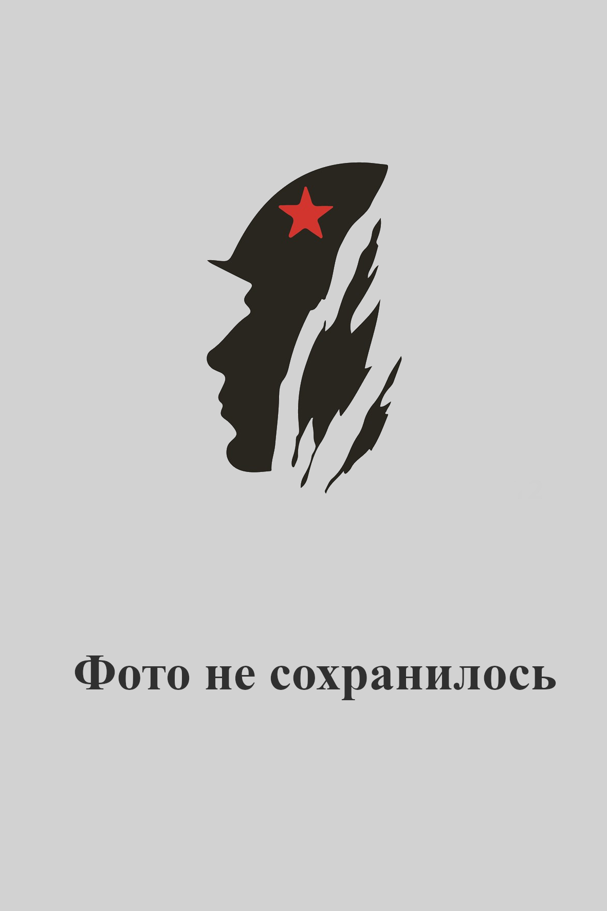

Андроненко Алексей Спиридонович
Дата рождения01.03.1922
Место рожденияКрасноярский край, Козульский район, п. Дубровка
Дата призыва14.09.1941
Место призываКрасноярский край, Даурский (ныне Балахтинский) район, Даурский РВК
Место службы13 инженерно-саперная бригада, 591 отдельный саперный батальон, 100 гвардейский отдельный саперный батальон
Воинское званиеМайор
Награды1. Орден Отечественной Войны 1 степени; 1985
СудьбаСтатус на момент окончания ВОВ: демобилизован (а).
Дата смерти: 15.12.1992.
Дата смерти: 15.12.1992.
ИсторияБоевой путь: Был призван на фронт Даурским РВК Красноярского края 14.09.1941 года. Майор. Служил в составе 10 гвардейской армии, 100 гвардейский отдельный сапёрный батальон. Был на Сталинградском, 4-м Украинском. 1-м Прибалтийском фронтах, октябрь 1942-сентябрь 1944 годы.